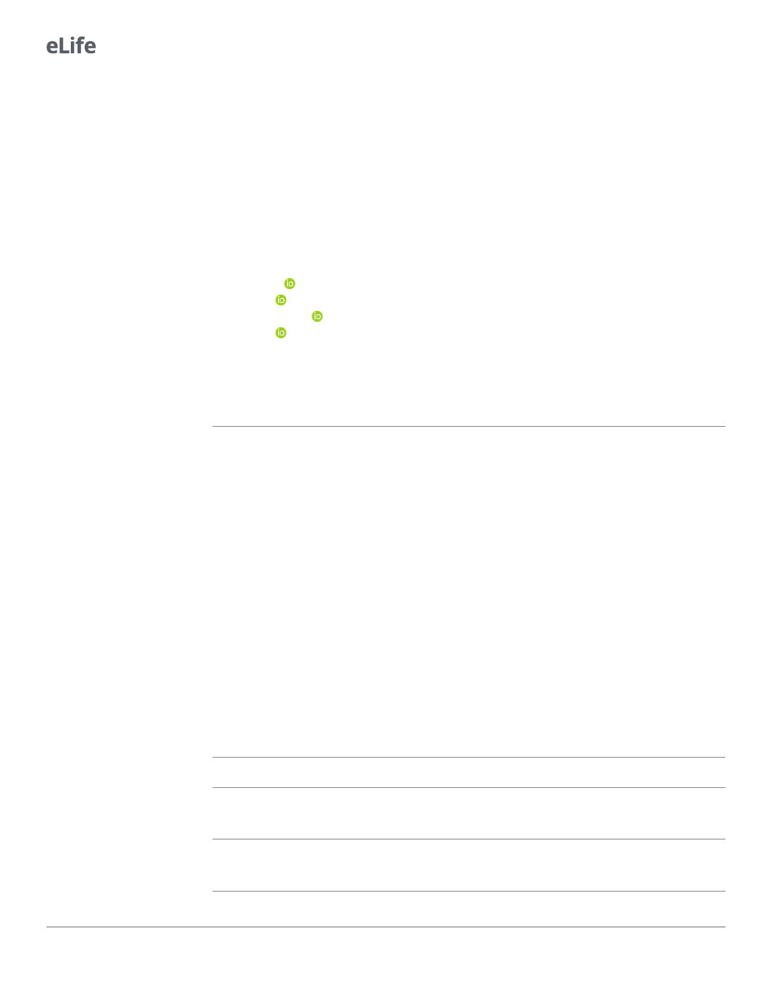

Research article
Microbiology and Infectious Disease
Author contributions
Teresa del Peso Santos, Data curation, Formal analysis, Validation, Investigation, Visualization, Meth-
odology, Writing - original draft, Writing - review and editing; Laura Alvarez, Oihane Irazoki, Benja-
min R Warner, Kurt Fredrick, Formal analysis, Investigation, Visualization, Methodology, Writing -
review and editing; Brandon Sit, Alyson R Warr, Anju Bala, Formal analysis, Investigation, Methodol-
ogy, Writing - review and editing; Jonathon Blake, Vladimir Benes, Software, Formal analysis, Investi-
gation, Methodology; Matthew K Waldor, Funding acquisition, Writing - original draft, Writing -
review and editing; Felipe Cava, Conceptualization, Resources, Formal analysis, Supervision, Funding
acquisition, Investigation, Visualization, Methodology, Writing - original draft, Project administration,
Writing - review and editing
Author ORCIDs
Decision letter and Author response
Additional files
Supplementary files
. Supplementary file 1. Supplementary figures 1–6.
. Supplementary file 2. Supplementary tables 1-3: strains, plasmids and primers used in this study.
. Supplementary file 3. RNA-seq.
. Supplementary file 4. RNA-seq – biofilm-related genes.
. Supplementary file 5. Transposon mutagenesis Vc co969 rugose colonies at 22˚C.
. Supplementary file 6. Transposon mutagenesis Vc C6706 rugose colonies at 37˚C.
. Supplementary file 7. Transposon mutagenesis Vc co969 smooth colonies at 37˚C.
. Supplementary file 8. Proteomic raw data and analysis.
. Transparent reporting form
Data availability
Sequencing data has been deposited in the European Nucleotide Archive (ENA) at EMBL-EBI under
accession numbers PRJEB42487 and PRJEB42488. All data generated or analysed during this study
are included in the manuscript and supplementary files.
The following datasets were generated:
Author(s)
del Peso T, Cava F
del Peso T, Cava F
Year Dataset title
2021
Identification of determinants
involved in temperature-
dependent colony morphology in
Vibrio cholerae co969
2021
RNA-Seq for identification of
differentially expressed genes in
Vibrio cholerae co969 colonies
grown at different temperatures
Dataset URL
Database and
Identifier
ENA, PRJEB42487
ENA, PRJEB42488
19 of 23